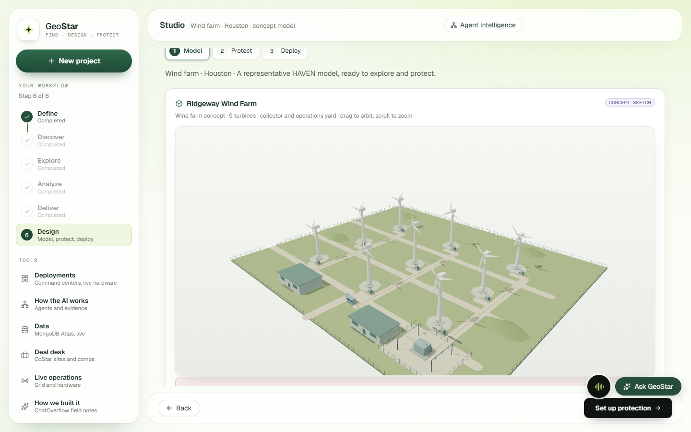
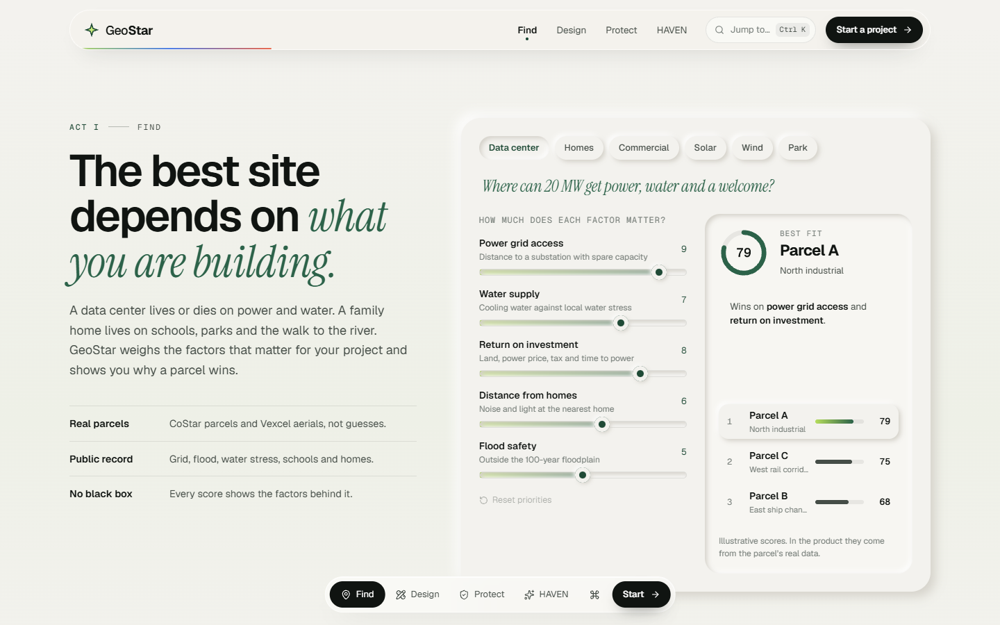
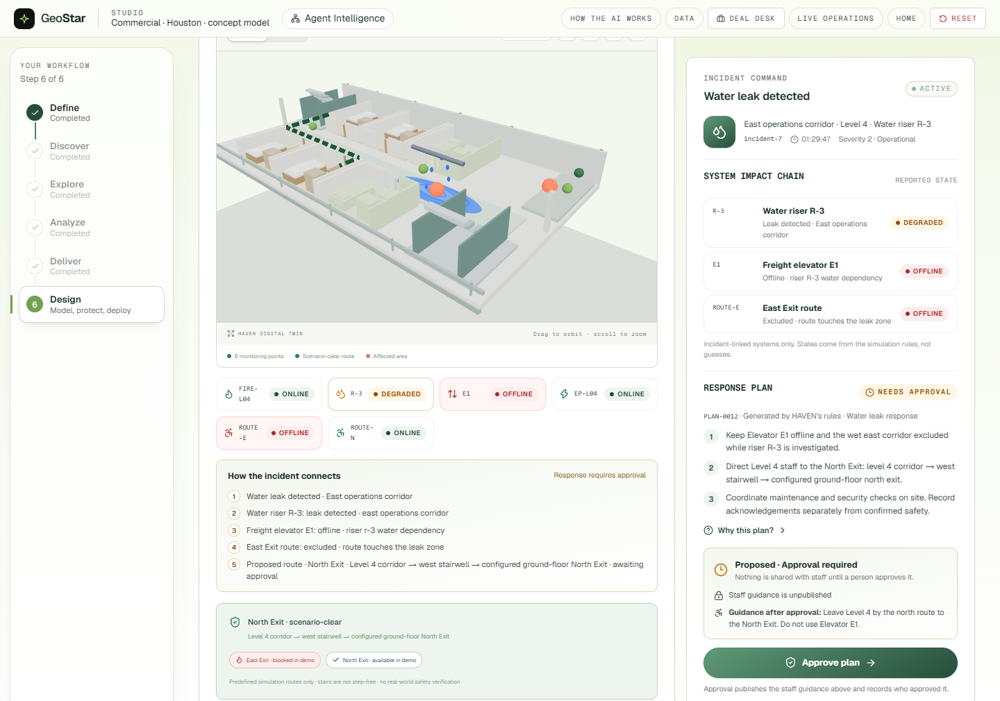

Site intelligence for what America is building fastest: data centers, energy and housing. From the right parcel, to the right plan, to the leak nobody saw yet.



Rank real CoStar parcels for what you are building. Hard gates first, then the score.
Generate concepts on the parcel, edit them in 3D, and export what an engineer can open.
Sensors where buildings really fail. Agents explain; a person approves; HAVEN responds.
Say what you are building and where.
Fly the Tello drone over the site.
Plans on the Vexcel aerial and in 3D.
Agents compare, score and debate.
Exports and the decision record.
Model, protect, go live.
One LangChain Deep Agents orchestrator plans, delegates in parallel, and calls a deterministic scoring function. Specialists return structured findings with evidence ids; a conclusion that disagrees with its own evidence is flagged as a conflict.
11 CoStar tools over MCP: the building, land, comps, occupancy, neighbours, data gaps.
Development economics, underwriting, NPV, grid prices, what-ifs.
Power, water, flood screen, the ERCOT grid day, conversion check.
Homes nearby, generator noise, carbon and water use.
Generates layouts, compares concepts, inspects objects.
Changes the drawing itself: preview first, then apply.
⚑ needs a person's approvalReads Vexcel aerials and drone frames for obstacles and hazards.
The deployed facility's protection state and playbook.
⚑ alerts need approval